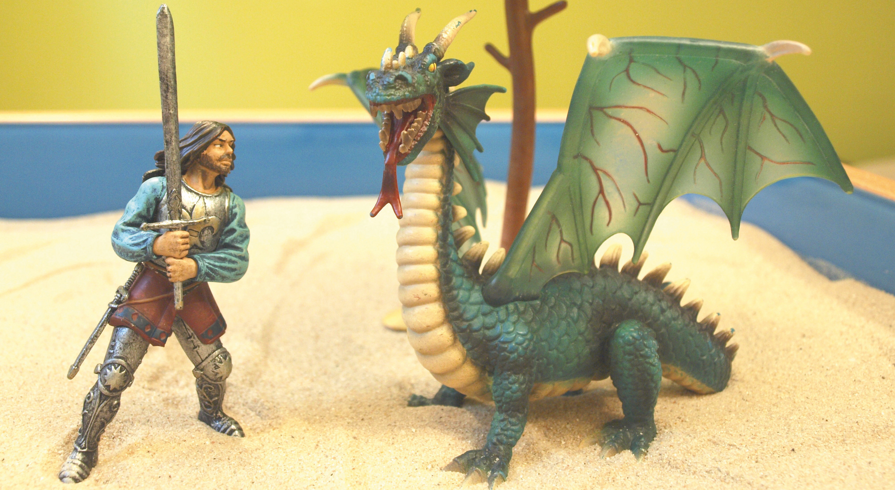

Mit Sand als einem archetypischen Symbol kommen wir bereits in frühester Kindheit in Berührung. Der Sandkasten, der vor allem für kleine Kinder eine wichtige Rolle spielt, aber auch für ältere Kinder noch bzw. wieder als Ausdrucksmittel ansprechend ist, bedeutet selbst für die Erwachsenen noch immer eine große Faszination. Er ruft bei ihnen auch Kindheitserinnerungen wach, die vielleicht schon lange verschüttet waren.

Die Redewendung, dass wir schon im Sandkasten miteinander gespielt haben, lässt auf eine langjährige und tiefe Verbindung zwischen zwei Menschen schließen. So spricht man auch von der 1. Sandkastenliebe, an die man sich ein ganzes Leben erinnert.
Das Sandspiel lässt Vergangenes mit Zukünftigem in der Bilderwelt scheinbar mühelos nebeneinander existieren und bietet somit die Möglichkeit an frühe Erfahrungen der Kindheit und die ersten kreativen Erlebnisse anzuschließen.
Sand ist ein wunderbares Spiel- und Gestaltungsmaterial, das jedem Menschen seit jungen Jahren vertraut ist. Er lässt sich in der Funktion eines Wandlungsgefäßes in vielfältiger Weise formen und verändern, um die individuelle Welt zu gestalten. Dadurch wird der Sandkasten zum Freiraum, in dem sich Neues auf kreative und ursprüngliche Art und Weise entwickeln kann und darf.
Das Sandspiel ermöglicht auf schöpferische Weise, eigene unbewusste Seelenbilder im Sandkasten zum Ausdruck zu bringen. Der Sandkasten verbindet die Innen- mit der Außenwelt, indem innere Gefühlszustände, Ängste und Sehnsüchte nach außen projiziert werden und sich Lösungswege abzeichnen können. Durch eine Stärkung der eigenen Ressourcen aus ganzheitlicher Sicht kann eine Heilung auf tiefer seelischer Ebene ermöglicht werden.